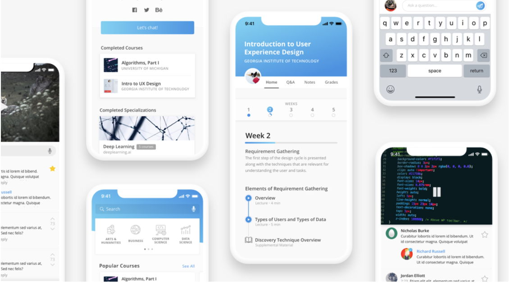

A Coursera redesign that gives its online students the true college experience -- frat parties excluded.
Coursera has done wonders in the online learning community, boasting over 23 million users globally after launching five short years ago. By offering courses on in-depth and niche topics from exceptional schools like Princeton and Stanford, Coursera brings their users top-notch curriculum even if their personal situations don't allow for full-time school. However, their retention rates are less than perfect, with only around 5% of students who register leaving with certification of completion.
1. The
2. The
3. The
From our research, we created two user personas: Ada and Gary. Ada is a classic casual learner, and Gary is a dedicated student. Ada is bright and interested, but Coursera's structure currently isn't enough to keep her engaged. Gary's willing to put in the work regardless, but really wishes that Coursera could do a little more. We kept their pain points in mind during our design decisions.
After a few interviews with students who had taken both on-campus courses and courses on Coursera, we found that the lack of interaction was one of the biggest reasons why they either didn't keep up with their Coursera classes or never took another one. When going through the curriculum alone, one after another, they found it tedious, almost like a chore.
To rectify this, we have users create profile, detailing a short blurb about themselves, the classes they have taken, and other opportunities to connect outside of just Coursera.
Not only do students get friends who are going through the same things they are, but they also have the opportunity to bounce what they learn off each other and truly be immersed in an academic area. What students talk about often goes past mundane happenings; they also learn about each other's backgrounds and experiences.
Seeing friends in class can also be another motivation to go, there has been research that shows that students learn from each other and mimic each other's behaviors. The relationships made in college can be just as important as coursework, if not more.
The only current capability for communication between students are the forums available for each course. Although it is a function of the site, students rarely post, and most courses' forums are empty. To integrate a stronger social aspect into Coursera, we focused on recreating what already exists in on-campus colleges currently.
By introducing each student to a study group when they have joined a course, instructors can ensure that each person has people to chat with and ask questions to. Additionally, these groups serve as an option for a variety of learning methods.